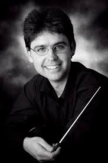

| Membership: |
|
|
| Ticket shop |

|
 |

|

|
The Pink Piano (PP) will once again make an appearance at The Strand Ephemera, The North’s Sculpture Festival, 28 July - 6 August 2017. As in previous years, the PP will contribute to the musical entertainment throughout the festival.
Individuals and groups are invited to play on or near the PP during the event.
You may reserve a time during the day or early evening. At other times, the PP will be available for use by the general public.
Please be aware that PP tuning is below A 440 Hz.
To reserve your place in the programme or if you require further information, please contact Bronia: - bronia99@hotmail.com.
An Australian Celtic rock band – this is one groovy, fun-loving, kick ’em in the pants band that just wants to rock — Celtic style! As in previous years, the PP will contribute to the musical entertainment throughout the festival.
Four talented musicians pump out a diverse selection of contemporary and traditional songs and tunes to keep the dance floor full; party music, making people dance, laugh, have a good time.
You may reserve a time during the day or early evening. At other times, the PP will be available for use by the general public.
A blend of vocals, bagpipes, violin, guitar, bass, whistle, harmonica, mandolin, bouzouki and synth, creating a unique mix of contemporary and traditional songs delivered in our unique Celtic style. From beautiful, eerie ballads to foot-stompin’ Celtic folk rock, it’s all in there.
Music to make people happy! More about Celtic Fyre....
Join us for a musical circumnavigation of Magnetic Island as the Townsville Guitar Orchestra presents the world premiere performance of Magnetic Modes – a suite of pieces for guitar ensemble and drums, written by local guitarist Simon Self.
Each piece centres on a particular geographical feature of Magnetic Island, generating moods to match the landscapes.
But the suite is as much an exploration of rhythm as it is of harmony, so drummer/percussionist extraordinaire Ian Brunskill adds an exciting mesh of rhythms.
Bigger and better than ever, this superb band presents a wide range of music, from classical to modern pop, played on concert band instruments including brass, woodwind, drums and percussion. Their repertoire includes a mixture of classical, modern pop and movie soundtracks and pretty much everything in between, even some contemporary compositions.
In 2015 a more compact and versatile “stage band” format was added, and this has now been developed along with the Concert Band to expand the repertoire. Both formats will feature in the concert.
Barrier Reef Goes to the Opera includes orchestral highlights, Opera and Musical Theatre from Puccini to Bernstein performed under the baton of Lieutenant Colonel Craig Johnson, Commanding Officer of the Defence Force School of Music in Melbourne.
We are delighted to welcome Craig to Townsville.
Along with our orchestra it features two soloists. We are delighted that ex-Townsville singer, Siobhan Patrick who is currently singing in Austria is coming to Australia to sing with the orchestra. She will be joined by well-known Townsville singer, Alex Thomas.
Starts promptly at 7:30pm - be early!

Unforgettable music from the world of stage and screen, presented by Townsville Brass!
Let your musical memories flood back as Townsville Brass, the current State B Grade champion band showcase their versatility as they feature a great selection of the unforgettable themes that made the musical shows and movies over the last century a special part of our lives. The band will be complemented with guest vocalists, Zoe Seitis, Hannah Royle and Brett Northeast, who will lend their youthful talent and enthusiasm to the occasion.
The concert will feature a wide range of musical styles from stage shows and movies covering more than 100 years, including the haunting majesty of Harry Potter and the Sorcerer’s Stone, the excitement of the chase in The Man from Snowy River, the classic operatic standards Nessun Dorma and Pie Jesu, plus Star Wars and James Bond’s Skyfall, just to name a few.

In a concert sure to delight lovers of musical theatre, "Gems from the Musicals" will feature ensembles, duets, and solo performances from the best musical theatre shows, such as Legally Blonde, Bye Bye Birdie, Chess, Jekyll and Hyde, My Fair Lady and 42nd Street with soloists Sandra Neal, Chris Davis, Leo Hogan, Claire Davies, and Rachel Cairns. The concert will also showcase the Townsville Choral Society’s vibrant and award-winning choir, fresh from their recent success at the NQ Eisteddfod in Cairns, under the direction of conductor Rachel Cairns
"Gems from the Musicals" coincides with the 110th anniversary of the Society, and audience members will be treated to a special “sneak peek” of several exciting upcoming shows.
Enjoy the true "Big Band" sound of the Stokes Nicholson Big Band, with music straight out of the 1940's and 50's, some jazz classics and some right up-to-date.
The Townsville Concert Band has grown to 45 members since its rejuvenation in 2014.
Bigger and better than ever, this superb band presents a wide range of music, from classical to modern pop, played on concert band instruments including brass, woodwind, drums and percussion.
Their repertoire incudes a mixture of classical, modern pop and movie soundtracks and pretty much everything in between, even some contemporary compositions.
The dynamic string quartet's blend of classical and modern music combines with the magic of Beauty and The Beast, Pocahontas, Aladdin, The Lion King, The Incredibles, Frozen and more!
Featuring
Caroline Lloyd-Doolan on violin
Susan Fraser on violin
Rebecca Brown on viola
Carol Radovanovic on cello
With Ashley Baxter on percussion

The Barrier Reef Orchestra’s final concert for 2015 is A Musical Feast.
The conductor is Mark Shiell making a return visit to Townsville.
The concert will include music from many different composers including Bach, Brahms and Strauss and will feature soprano, Julie O’Connor who will sing numbers from Puccini and Dvorak.

Conductor: Mark Shiell
Mark has guest-conducted ensembles including the Melbourne Symphony Orchestra, West Australian Symphony, Moscow Symphony Orchestra, State Academic Symphony Orchestra of St. Petersburg, Victorian Opera, Orchestra Ensemble Kanazawa, Canberra Symphony Orchestra, Sydney Sinfonia, Melbourne Youth Orchestra, University of Melbourne Symphony Orchestra and the Orchestras of the State Music Camps in Melbourne and Adelaide.
Currently he serves as Artistic Director and Principal Conductor of Zelman Symphony Orchestra, the Ballarat Symphony and the Macquarie Philharmonia.
His love of community and youth music has kept him busy contributing to the growth and development of important initiatives in both of these areas here in Australia. Most recently, Mark developed a Regional Orchestra Weekend for ensembles from across Victoria to meet and perform together, with the aim to make this an annual event.
Mark is also passionate about the education and training of future conductors, and has been frequently involved as a guest teacher of the Masters of Conducting students at the Melbourne Conservatorium in 2015.
Exotic and Exciting! The extraordinary 50-voice world music choir Aquapella return from their European tour to join the 42-piece Townsville Concert Band for a musical journey through voice and instruments.
Enjoy an exceptional afternoon of beautiful music performed by the talented students of Pimlico State High School as they put a final polish on their skills in preparation for the Townsville Eisteddfod.
Supported by Pimlico's String Quartet and Woodwind Quintet.
Bigger and better than ever, this superb 40-piece band presents a wide range of music, from classical to modern pop, played on classic concert band instruments including brass, woodwind, drums and percussion.
Featuring a special guest appearance by Die Franfurter Oompah Band
Grab your passport and travel with us to the Celtic Highlands and then step into the Bluegrass country in the heart of America!
Join us for a toe tappin', soul searchin' journey as AVIVA makes it's way around the world on the first of our two globe trotting adventures!
Featuring
Caroline Lloyd-Doolan on violin
Susan Fraser on violin
Rebecca Brown on viola
Carol Radovanovic on cello
Paul Neilson on percussion

presents
presents
March into Sommarhagen
Enjoy a spot of Lawn Tennis
Meet the Girl with Flaxen Hair
Dance the Habanera
Be seduced by Thais
Or just relax and let the music wash over you...


supported by
and
Enjoy an exceptional afternoon of beautiful music performed by the talented students of Pimlico State High School as they put a final polish on their skills in preparation for the Townsville Eisteddfod.

Effortlessly crisscrossing between the genres of Classical, Jazz, Blues, Pop, World and Flamenco, Antonio plays an eclectic repertoire of his own unique arrangements.
Melodies from film themes to folk songs, Bach to Bacharach as well as his own original compositions
As each song is accompanied by its own story the maestro invites you into his life for one unforgettable night in a personal and intimate setting.